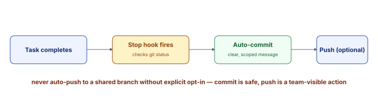

Concept: Automated Git Sync
The Big Picture
Git automation through hooks (Topic 06) handles commits for you. When Claude Code finishes a task (the Stop event), a hook checks for uncommitted changes and commits them with a real message describing what changed. No more manual git add/commit.
Commit vs. Push: Safe to auto-commit (it's local, reversible). Push is different — it's visible to your team. Push only on explicit approval.
Why Automate Commits
- Never forget to commit. Changes are captured immediately after each task.
- Clean, scoped commits. Each Claude Code response gets its own commit with a message describing that specific work.
- Reversible. If a commit is wrong, `git reset --soft HEAD~1` takes it back.
- Team history stays accurate. Every change is documented with a real message, not "WIP" or "fixup."
The Stop Hook
The Stop hook fires when Claude Code finishes responding. It's the natural checkpoint:
Stop hook runs when:
- Claude finishes its response
- Tool calls are complete
- Before the next user prompt
This is the ideal moment to commit: the diff is fresh and scoped to one task.Commit Message Strategy
Automate the commit but not the message. Best approach:
- Claude Code reads `git diff` in the Stop hook
- It writes a real message: "Add user authentication to settings" not "auto-commit"
- Commit goes in with a meaningful message

Real-World Use Cases
1. Always-Committed Working Directory
The problem: You use Claude Code to make changes, but forget to commit. After an hour, you have a large, scoped-unclear diff. You forget what you changed earlier.
The solution: Stop hook auto-commits each task. Every response gets its own commit with a message.
The result: Clean git history. Each task is isolated. You can always see what changed when.
2. Safe Rollback
The problem: Claude Code made a change that turned out wrong. You want to revert just that change, but it's mixed with other work in your working directory.
The solution: With auto-commit, you can `git reset --soft HEAD~N` to take back only the bad commits.
The result: Easy, surgical rollbacks. No need to cherry-pick or manually revert.
3. Code Review Clarity
The problem: You push a PR with 10 commits. Reviewers can't tell which commit is which task. The diff is hard to understand.
The solution: Each Claude Code task → one commit with a clear message. PR reviewers see clean, scoped diffs.
The result: Code reviews are faster. Reviewers understand the reasoning behind each change.
4. Debugging via Git Bisect
The problem: A bug was introduced. You want to find which commit broke it using `git bisect`.
The solution: With clean, scoped commits, bisect works perfectly. Each commit is a single change.
The result: Bugs are traced to their exact commit. No guessing.
5. Compliance and Audit Trail
The problem: Your company requires proof that all code changes are documented. Manual commits are easy to forget.
The solution: Auto-commit ensures nothing is missed. Every change has a commit message explaining it.
The result: Audit trail is complete and automatic.
Hands-on Practice: Three Examples
Example 1: Set Up Auto-Commit Hook
Claude Code chat panelStep 1: Ask Claude to add a Stop hook for auto-commits:
Add a Stop hook to .claude/settings.json that:
1. Runs when I finish a turn (Stop event)
2. Checks `git status --short` for uncommitted changes
3. If there are changes, stages them with `git add`
4. Writes a commit message by reading `git diff --cached` and summarizing
5. Commits with `git commit -m ""`
6. Does NOT push
Show me the hook config and script. Example 2: Trigger Auto-Commit
Claude Code chat panelStep 1: Make a change and watch the hook fire:
Add one bullet point to the top of W2D0/discussion-Qs.html explaining
the purpose of auto-commit hooks in workflow automation. Keep it brief.Step 2: After Claude finishes, check git history:
git log --oneline -5What you should see: Your new auto-commit appears at the top with a message summarizing the change.
Example 3: Verify Commits Stay Local (No Auto-Push)
Terminal/PowerShellStep 1: Check commits are local only:
git log --oneline HEAD...origin/main 2>/dev/null | head -5 || echo "No commits ahead of origin"What you should see: Your auto-commits are ahead of the remote (not pushed). They're local and safe.
Example 4: Decide When You'd Add Auto-Push
Claude Code chat panelStep 1: Auto-commit is safe by default because it's local and reversible. Auto-push is a different risk level — it's visible to your team the moment it happens. Ask Claude to help you reason about where the line should be:
Under what specific conditions would auto-pushing (not just auto-committing)
be safe to enable here — a personal scratch branch? Never on main? Give me
a one-sentence policy.